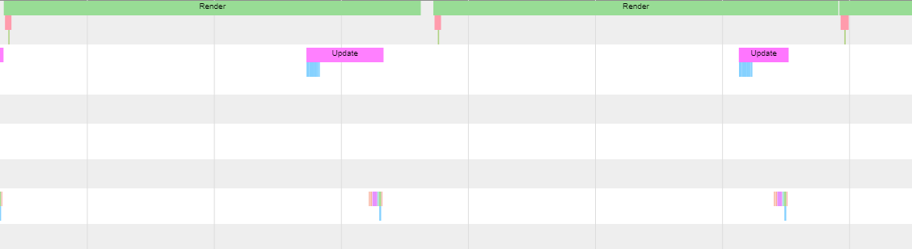

Definitely this has been the most challengin project we have made, but that made me to love it. We had to make a game engine/renderer from Scratch, or barely from scratch, we could use third party libraries. Also since I wasn't alone and I was with my beloved friend Marcos Briz the projact was much easier.
We started making the window using Sokol, which also provided us with a rendering context for OpenGL. After that we made the flow of the aplication making it that the Update for the next thread runs while we are still rendering the scene. Here is where PX Sched and Minitrace came handy. We used the first one to sync different task and run thing in different threads, and the second one to really make sure that that was happening, and, also it was useful later on for profiling purposes.
 Renderer life flowAnother library that came handy was IMGUI that provided us with the necessary tools to make a sort of editor, for being able to interact with parts of the engine while being at runtime.
With those first steps we started working with geometry, textures and shaders for being able to draw into the window. With that done, we started with the ECS, inspired by a really masterclass of ECS and data structures of our teacher Jose Luis we decided to take the complex aproach, what turned into a few of fun and good nights in front of the computer.
With the ECS working, we just had to make components (or that's what we thought), and the first ones came, also with systems, like tranform components with parent and child systems. Light components with a system to render them with deferred rendering and our beloved camera with his own component.
Finally, we spiced it up with, shadows, post-processes, temporal anti-aliasing, PBR, a skybox and an editor.
 Our beloved friend Suzanne
Our beloved friend Suzanne
 PBR Spheres without reflection
PBR Spheres without reflection